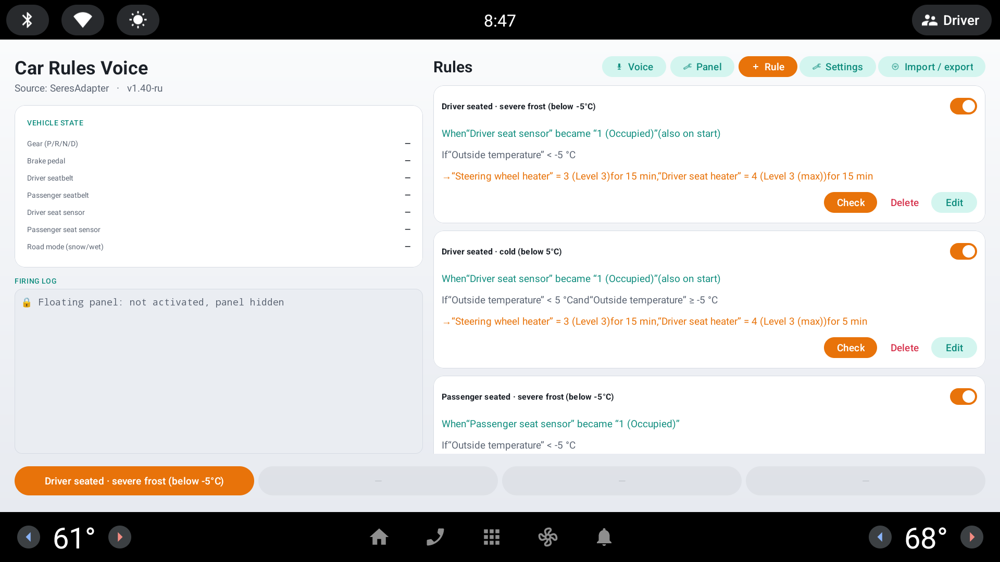
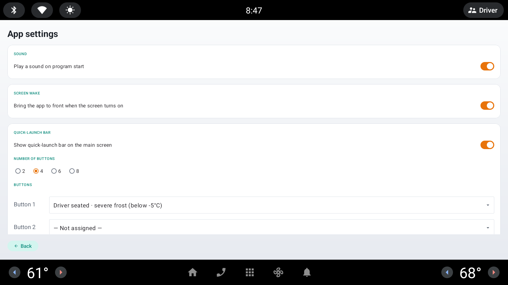

Пошаговое создание правила на двух примерах, привязка правила к
голосовой команде, FAQ. · Step-by-step rule creation with two worked examples, attaching a
rule to a voice command, an FAQ. · ساخت گامبهگام قانون با دو مثال، اتصال قانون به فرمان
صوتی، سؤالات متداول.
Как другому приложению получить список правил и запустить
правило по требованию. · How another app can list the saved rules and run one on
demand. · اینکه چگونه یک برنامهٔ دیگر میتواند فهرست قوانین را دریافت کند و یکی را
اجرا کند.
Скачать / Download / دانلود — Car Rules Voice v1.41
Выберите APK того языка, на котором будете произносить голосовые команды. · Choose the APK matching the language you will speak voice commands in. · APK را متناسب با زبانی که فرمان صوتی میگویید انتخاب کنید. · Android 10+ (Seres M5).
Car Rules v0.71 — версия без голоса (лёгкая, только правила) / no-voice edition (lightweight, rules only) / نسخهٔ بدون صدا (سبک، فقط قوانین):
📦 CarRules-0.71-release.apk
Оба приложения подписаны одним ключом — правила из Car Rules можно перенести в Voice при первом запуске или через меню «⋮». · Both apps share one signing key — rules from Car Rules can be imported into Voice on first launch or via the “⋮” menu. · هر دو برنامه با یک کلید امضا شدهاند — قوانین Car Rules هنگام اولین اجرا یا از منوی «⋮» به Voice منتقل میشود.
Видео-демонстрация / Video demo / ویدئوی نمایشی
Скриншоты / Screenshots / تصاویر

Главный экран + панель быстрого запуска · Main screen + quick-launch bar · صفحهٔ اصلی + نوار دسترسی سریع

Настройки программы · App settings · تنظیمات برنامه
Авто Правила Голос — инструкция
Приложение для головного устройства Seres M5: автоматические
правила для автомобиля плюс офлайн-голосовое управление.
Что это
Правила строятся по принципу:
КОГДА что-то произошло → И ЕСЛИ выполняются условия → ТО выполнить действия.
Пример: «Когда водитель сел на сиденье, и если за бортом ниже −5 °C, то включить
подогрев руля и сиденья на 15 минут». Приложение работает в фоне и запускается само
после включения головного устройства.
Голосовое управление (новое)
Приложение распознаёт речь полностью офлайн (движок Vosk) — интернет не нужен.
Любому правилу можно назначить фразы, и когда приложение их услышит — правило выполнится.
На главном экране откройте «Голосовые команды».
Функция платная и активируется под конкретный VIN. Цена: 1000 ₽.
На экране активации показан VIN вашей машины — пришлите его разработчику на
tsrman@gmail.com, получите 16-значный код и введите его.
Выберите кнопку активации на руле: двойное нажатие скролла вверх/вниз
(PAGE UP/PAGE DOWN), одиночное нажатие кастомной кнопки руля или штатная кнопка
голосового помощника на руле (см. ниже).
Кнопкой «Проверить распознавание» убедитесь, что микрофон работает.
Задайте фразы: «+ Голосовая команда» → выберите правило → введите одну или
несколько фраз-синонимов.
Язык распознавания задаётся установленным APK (русский / английский / фарси). Ставьте
APK того языка, на котором будете говорить.
Кнопка голосового помощника (на руле)
Штатная кнопка голосового помощника на руле тоже может активировать голос — без отдельного приложения.
В Voice встроен компаньон, который подменяет отсутствующий голосовой клиент и передаёт нажатие приложению.
Прошивка магнитолы отключает сторонние приложения при каждой перезагрузке, поэтому на загрузке Voice сам
проверяет компаньона и при необходимости устанавливает или включает его через собственный adbd (adb
включается штатной заводской диагностикой только когда это действительно нужно и возвращается в прежнее
состояние). Это происходит только если выбран именно этот способ активации. Установить или включить
компаньона можно и вручную — выбрав этот пункт на экране «Голосовые команды»; при первом запуске
подтвердите системный диалог «Разрешить отладку?».
Дополнительные настройки голоса
Ставить медиа на паузу во время прослушивания — перед открытием микрофона ставит на паузу Яндекс Музыку и
штатный плеер (Bluetooth и USB — каждый канал включается отдельно) и запускает снова сразу после, независимо
от того, распознана ли команда.
Поднимать приложение на экран при активации (экспериментально) — включите, если голос выдаёт «Микрофон недоступен» в фоне:
на некоторых магнитолах надёжный доступ к микрофону есть только у приложения на переднем плане.
Вернуть управление в — работает вместе с предыдущей опцией: после команды экран
переключится на выбранное приложение, а не останется на этом.
Плавающая панель (новое)
Окно поверх всех приложений с крупными кнопками — по одному нажатию запускает выбранное правило
без переключения на само приложение. Та же платная лицензия, что и у голосового управления — один
и тот же код активирует обе функции.
На главном экране откройте «Панель».
Сначала нужно разрешение «Отображение поверх других окон» — см. ниже, как его получить.
После получения разрешения появится тот же экран активации (VIN + 16-значный код), что и для голоса.
Выберите количество кнопок (2, 4, 6 или 8) и форму панели
(вертикальная или горизонтальная), при необходимости включите «Уменьшить панель в 2 раза» и назначьте правило на каждую кнопку.
Панель можно перетащить за верхнюю полоску в удобное место — позиция запоминается.
Как получить разрешение «Отображение поверх других окон»
Откройте «Панель» и нажмите «Включить ADB и выдать права» (кнопка
показывается, пока разрешения нет): приложение включит adb штатной заводской диагностикой, выдаст себе
«Отображение поверх других окон» и «Изменение системных настроек» (нужно действию «Авто-яркость экрана»)
и вернёт adb в прежнее состояние. При первом запуске один раз подтвердите системный диалог
«Разрешить отладку?». Долгое нажатие на кнопку открывает системные настройки — для ручной выдачи.
Действию «Яркость экрана» в правилах (см. таблицу действий ниже) это разрешение не
нужно — начиная с v1.02 оно пишет яркость напрямую через системный сервис управления
подсветкой, без каких-либо специальных разрешений.
Вручную с компьютера, если у вас есть adb: adb connect <IP магнитолы>:5555 adb shell appops set --user 0 org.tsrman.carrules.voice SYSTEM_ALERT_WINDOW allow
Действию «Авто-яркость экрана» нужно ещё одно разрешение — «Изменение системных настроек»: adb shell appops set --user 0 org.tsrman.carrules.voice WRITE_SETTINGS allow
Первый запуск
Установите APK и откройте приложение.
Разрешите доступ к геолокации (нужен для геозон; можно отказать). Для правил с
геозоной выберите «Разрешить в любом режиме», иначе геозоны не сработают в фоне.
Короткая мелодия при старте означает, что приложение подключилось к автомобилю.
Есть готовые правила (подогрев в холод, вентиляция в жару, разблокировка при «Парковке») —
их можно менять, отключать или удалять.
Главный экран
Правила — список; у каждого переключатель вкл/выкл и кнопки «Проверить»,
«Изменить», «Удалить».
Состояние автомобиля — живые значения параметров.
Журнал срабатываний — что и когда сработало, включая ошибки и нажатия кнопок руля.
Панель быстрого запуска — ряд до 8 кнопок на главном экране, каждая запускает своё правило;
включается в «Настройки», лицензия не нужна.
Как создать правило
Нажмите «Правило», введите название.
«Когда (триггер)»: параметр/событие, переход («Стало равно», «Изменилось»,
«Возросло», «Уменьшилось») и значение. Под полем видно живое значение параметра.
Кнопка «Триггер» добавляет ещё один (сработает по любому — ИЛИ).
«И если» (условия): по умолчанию нужны все (И), переключателем — любое (ИЛИ).
«То выполнить» (действия): что включить и на какое значение. «Минут» — автовыключение
(переживает перезагрузку); «Задержка» — выполнить через N секунд; «тест» — выполнить сразу.
«Сохранить».
Полезные опции
«Срабатывать при старте»
Для перехода «Стало равно»: правило дополнительно сработает при запуске, если значение
уже нужное. Не срабатывает дважды за поездку (перевзвод — при снятии питания или через 4 часа).
Геозоны
«Также требовать нахождение в зоне»: задайте радиус, доедьте до места и сохраните координаты.
Пустой триггер → срабатывание при въезде; заданный триггер → геозона как доп. условие.
Для работы в фоне нужен фоновый доступ к геолокации.
Уведомление при срабатывании
У правила есть галочка «Показывать всплывающее уведомление и звук при срабатывании» — снимите её для «тихих» правил (в списке они помечены 🔕).
Настройки программы
Кнопка «Настройки» на главном экране:
Звуковой сигнал при запуске программы — можно отключить.
Выводить приложение на экран при включении экрана — снимите галочку, если не хотите, чтобы приложение само выходило
на передний план при включении зажигания / пробуждении экрана.
Показывать панель быстрого запуска на главном экране — ряд кнопок на главном экране: выберите количество (2, 4, 6 или 8) и назначьте правило на каждую; бесплатно, без привязки к лицензии плавающей панели.
Тему оформления («Как в системе» / «Светлая» / «Тёмная») выбирают в меню
«Импорт / экспорт» → «Тема оформления».
Импорт и экспорт
Кнопка «Импорт / экспорт» на главном экране открывает меню:
Экспорт правил (новый файл) — сохраняет правила, голосовые команды и все настройки (плавающая панель, настройки программы, настройки голоса, тема; лицензия голоса не сохраняется) в
Download/CarRulesVoice/.
Импорт правил… — выберите файл из этой папки; текущие правила (и голосовые команды, если они
есть в файле) будут заменены — приложение спросит подтверждение.
Импорт из Car Rules — переносит правила из обычного приложения Car Rules (оба приложения подписаны
одним ключом); при первом запуске приложение само предложит это сделать.
Тема оформления — «Как в системе» / «Светлая» / «Тёмная».
Параметры (триггеры и условия)
Параметр
Значения
Запуск устройства / приложения (событие)
1 = Событие
Экран включился (событие)
1 = Событие
Разблокировка экрана (событие)
1 = Событие
Доступ к интернету (событие)
0 = Выкл, 1 = Вкл
Температура за бортом
число, °C
Температура в салоне
число, °C
Скорость
число, км/ч
Заряд батареи
число, %
Уровень топлива
число, %
Питание автомобиля
0 = Выкл, 1 = ON / готов к движению
Передача (P/R/N/D)
0 = P, 1 = R, 2 = N, 3 = D
Статус зарядки (AC / DC быстрая)
0 = Не заряжается, 1 = Термоподготовка, 2 = Заряжается, 3 = Завершена, 4 = На паузе, 5 = Остановлена
Подключение зарядного кабеля
число (код зависит от типа разъёма — смотрите живое значение)
«…: переключить» — для циркуляции воздуха, климат-контроля, обогрева заднего стекла, подогрева форсунок омывателя, лючка зарядки, авторазблокировки и автоблокировки
без значения: читает текущее состояние и переключает на противоположное (циркуляция — между «внутри» и «снаружи»)
Про кнопки руля. Одиночное и двойное нажатие скролла разведены: одиночный
триггер срабатывает с задержкой 0,4 с (ждёт второе нажатие). Так «1 клик = одно действие,
2 клика = другое» настраивается двумя правилами. Изменения всех кнопок руля пишутся в журнал.
Важно знать
Правило срабатывает один раз на событие; первое значение после запуска — базовая линия.
Коды перечислений подобраны по реальным дампам и могут отличаться в другой комплектации —
проверяйте кнопкой «тест» и живым значением.
История изменений
v1.41 — на загрузке перед проверкой VR-компаньона и включением ADB теперь пауза 60 с (прошивка успевает закончить свой проход, который отключает сторонние приложения). Экспорт теперь включает все настройки: программы (звук, экран, панель быстрого запуска), голоса и тему; лицензия голоса не экспортируется.
v1.40 — исправлен краш ADB-авторизации (ClassCastException) на устройствах, где RSA-ключ генерируется без CRT-параметров; затрагивало выдачу прав и установку VR-компаньона.
v1.39 — действие «переключить» для ещё 6 вкл/выкл свойств: климат-контроль, обогрев заднего стекла, подогрев форсунок омывателя, лючок зарядки, авторазблокировка и автоблокировка.
v1.38 — на загрузке ADB не включается, если VR-компаньон уже установлен и включён.
v1.37 — исправлена ошибка ADB-авторизации (ClassCastException), из-за которой падали установка VR-компаньона и выдача прав.
v1.36 — VR-компаньон ставится/включается на загрузке только при способе активации «Кнопка голосового помощника».
v1.35 — кнопка голосового помощника на руле работает без отдельного приложения: VR-компаньон встроен и сам устанавливается/включается через собственный adbd. Новый способ активации голоса — «Кнопка голосового помощника (на руле)».
v1.34 — кнопка «Включить ADB и выдать права» перенесена на экран «Плавающая панель» (нажатие — автовыдача, долгое — ручной путь в системные настройки).
v1.33 — приложение само включает ADB (штатной заводской диагностикой) и выдаёт себе «Отображение поверх других окон». При первом запуске подтвердите системный диалог «Разрешить отладку».
v1.31 — беспроводная зарядка телефона: статус как условие/триггер и действие вкл/выкл.
v1.30 / Car Rules v0.71 — исправлены перепутанные подписи «Заблокировано/Разблокировано» у детского замка задних дверей: на самом деле 0 = заблокировано, 1 = разблокировано (подтверждено декомпиляцией штатного переключателя SeresSettings). Если у вас есть правило с этим действием — проверьте значение.
v1.23–v1.29 — запуск правил сторонними приложениями по id/имени (v1.29); пауза медиа по каналам и отдельные действия для каждого окна (v1.28); настройка «Вернуть управление в» (v1.27); действие «Окна: установить положение» (v1.26); текстовые подписи у кнопок главного экрана (v1.25); настройка «Включение экрана» (v1.24); действие «Циркуляция воздуха: переключить» (v1.23).
v1.19–v1.22 — редизайн экрана редактора правил (тёмная тема с зелёным акцентом, две колонки, переключатель И/ИЛИ, нумерация строк) и две правки его вёрстки (v1.20–v1.21); на сайт добавлена подробная инструкция со скриншотами.
v1.10–v1.18 — действие «Управление штатным медиаплеером» и опция «Ставить медиа на паузу при прослушивании» (v1.18); экран «Настройки» и панель быстрого запуска на главном экране (v1.17); вентиляция сидений как условие (v1.16); багажник только в «P», статусы зарядки/топлива и лючок бака (v1.15); панель на 2 кнопки и «Уменьшить в 2 раза» (v1.14); переработаны экраны панели и голосовых команд (v1.12–v1.13); крупнее шрифты (v1.11); «Перекинуть приложение: приборка / центральный экран», детский замок задних дверей, режимы вождения как условие (v1.10).
v1.00–v1.05 — «Яркость экрана» (v1.00; с v1.02 через системный сервис подсветки, разрешение не нужно) и «Авто-яркость экрана» (v1.04, нужно разрешение «Изменение системных настроек»); настройки плавающей панели входят в экспорт/импорт (v1.03); кнопка панели запускает правило без проверки условий и «Статус автоблокировки/авторазблокировки» (v1.05).
v0.79–v0.99 — плавающая панель быстрого запуска (v0.79–v0.82); массаж передних сидений и подогрев форсунок омывателя (v0.98–v0.99); тема приложения «Как в системе / Светлая / Тёмная» (v0.95); повторные попытки при занятом микрофоне и причина ошибки в сообщении (v0.86–v0.88); сортировка списков параметров по алфавиту (v0.84).
v0.5x–v0.78 — офлайн-голосовое управление (Vosk); действия «Зеркала: сложить/разложить», «Багажник: открыть/закрыть», «Обогрев заднего стекла», «Температура климата», «Дворники: сервисный режим»; кастомная кнопка руля как триггер и как активация голоса; импорт правил из Car Rules и экспорт/импорт в файл (стабильно с v0.78, экспорт включает голосовые команды); компактный журнал.
Car Rules v0.67–v0.70 — в обычную Car Rules портированы функции Voice: багажник, обогрев заднего стекла, кастомная кнопка руля, управление штатным медиаплеером, яркость и авто-яркость, переключение приложения между приборкой и центральным экраном, лючок бака, детский замок, статусы зарядки/топлива и другие условия; исправлена кнопка «Тест» у действия «Голосовой ассистент» (v0.69).
Car Rules Voice — user guide
An app for the Seres M5 head unit: automated vehicle rules
plus offline voice control.
What it is
Rules follow the pattern:
WHEN something happens → AND IF conditions hold → THEN run actions.
Example: “When the driver sits down, and if it is below −5 °C outside, turn on the steering
wheel and seat heaters for 15 minutes.” The app runs in the background and starts by itself
after the head unit powers on.
Voice control (new)
The app recognizes speech fully offline (Vosk engine) — no internet needed. Assign
phrases to any rule; when the app hears them, the rule runs.
Open “Voice commands” from the main screen.
It is a paid feature, activated per VIN. Price: $15. The activation
screen shows your car’s VIN — email it to tsrman@gmail.com,
get a 16-digit code and enter it.
Turn on the top “Voice commands” switch.
Pick the activation button on the wheel: double-press the scroll rocker up/down
(PAGE UP/PAGE DOWN), a single press of the custom wheel button, or the stock voice-assistant
button on the wheel (see below).
Use “Test recognition” to confirm the microphone works.
Add phrases: “+ Voice command” → pick a rule → enter one or more synonym phrases.
The recognition language is set by the installed APK (Russian / English / Persian). Install
the APK for the language you will speak.
Voice-assistant button (steering wheel)
The stock voice-assistant button on the steering wheel can activate voice too — without a separate app.
Voice bundles a companion that stands in for the missing voice client and passes the button press to the app.
The head unit's firmware disables third-party apps on every reboot, so at boot Voice checks the companion itself
and, if needed, installs or enables it through its own adbd (adb is switched on via the factory diagnostic
routine only when really needed and put back as it was). This only happens when this activation mode is
selected. You can also install/enable the companion manually by picking this option on the “Voice commands”
screen; on first run, confirm the one-time “Allow debugging?” system dialog.
More voice settings
Pause media while listening — pauses Yandex Music and the stock player (Bluetooth and USB, each
channel toggled separately) right before the microphone opens and resumes them right after, whether or not a
command was recognized.
Bring app to front on activation (experimental) — turn it on if voice reports “Microphone unavailable” in the
background: on some head units only the foreground app has reliable microphone access.
Return control to — works together with the previous option: after the command the
screen switches to the chosen app instead of staying on this one.
Floating panel (new)
A window on top of every other app with large buttons — one tap runs the chosen rule without
switching to the app itself. Same paid license as voice control — one code activates both.
Open “Panel” from the main screen.
It needs the “Display over other apps” permission first — see below for how to get it.
Once granted, the same activation screen (VIN + 16-digit code) as voice control appears.
Choose the number of buttons (2, 4, 6, or 8) and the panel shape
(vertical or horizontal), optionally turn on “Half-size panel”, then assign a rule to each button.
Drag the panel by its top strip to reposition it — the position is remembered.
How to get the “Display over other apps” permission
Open “Panel” and tap “Enable ADB & grant permissions” (the button is
shown while the permission is missing): the app turns adb on via the factory diagnostic routine, grants
itself “Display over other apps” and “Modify system settings” (needed by the “Auto brightness” action),
and puts adb back as it was. On first run, confirm the one-time “Allow debugging?” system dialog.
A long press on the button opens system settings for manual granting.
The “Screen brightness” action in rules (see the actions table below) does not need
this permission — as of v1.02 it writes brightness directly through the platform's own backlight
service, no special permission required.
Manually, from a computer, if you have adb: adb connect <head unit IP>:5555 adb shell appops set --user 0 org.tsrman.carrules.voice SYSTEM_ALERT_WINDOW allow
The "Auto brightness" action needs one more permission — "Modify system settings": adb shell appops set --user 0 org.tsrman.carrules.voice WRITE_SETTINGS allow
First run
Install the APK and open the app.
Allow location access (needed for geofences; you may decline). For geofence rules
choose “Allow all the time”, otherwise geofences won’t fire in the background.
A short jingle at startup means the app connected to the car.
Ready-made rules exist (heating in cold, ventilation in heat, unlock in “Park”) — edit,
disable or delete them.
Main screen
Rules — each with an on/off switch and “Check”, “Edit”, “Delete”.
Vehicle state — live parameter values.
Firing log — what fired and when, including errors and wheel-button presses.
Quick-launch bar — a row of up to 8 buttons on the main screen, each running its own rule;
turn it on in “Settings”, no license needed.
Creating a rule
Tap “Rule”, enter a name.
“When (trigger)”: parameter/event, transition (“Became equal”, “Changed”,
“Increased”, “Decreased”) and value. The live value is shown under the field. “Trigger”
adds another (fires on any — OR).
“And if” (conditions): all required by default (AND); a switch makes it any (OR).
“Then do” (actions): what to turn on and to which value. “Minutes” — auto-off (survives
reboot); “Delay” — run after N seconds; “test” — run once now.
“Save”.
Useful options
“Fire on start”
For the “Became equal” transition: the rule also fires at startup if the value already
matches. It won’t fire twice per trip (re-armed when power is cut or after 4 hours).
Geofences
“Also require being in a zone”: set a radius, drive to the spot and save the position.
Empty trigger → fires on entering; a set trigger → the geofence acts as an extra
condition. Background location access is needed to fire while the app is closed.
Notification on fire
Each rule has a “Show a toast + sound when this rule fires” checkbox — clear it for “silent” rules (they are marked 🔕 in the list).
App settings
The “Settings” button on the main screen:
Play a sound on program start — can be turned off.
Bring the app to front when the screen turns on — clear it if you don't want the app to come to the front by
itself when the ignition turns on / the screen wakes.
Show quick-launch bar on the main screen — a row of buttons on the main screen: choose how many (2, 4, 6 or 8) and assign a rule to each; free, not tied to the floating panel's license.
The theme (“Follow system” / “Light” / “Dark”) is chosen in the
“Import / export” menu → “Theme”.
Import and export
The “Import / export” button on the main screen opens a menu:
Export rules (new file) — saves rules, voice commands and all settings (floating panel, app settings, voice settings, theme; the voice license is not saved) to
Download/CarRulesVoice/.
Import rules… — pick a file from that folder; the current rules (and voice commands, if the
file has them) are replaced — the app asks for confirmation first.
Import from Car Rules — copies the rules over from the plain Car Rules app (both apps share one signing
key); the app also offers this by itself on first launch.
Window: front left / front right / rear left / rear right
number 0–100, % (0 = closed, 100 = fully open)
Launch app
pick an installed app
Toggle app: cluster / center display
pick an installed app (toggles display each time it fires)
Yandex Music control
Play, Pause, Play/Pause, Next, Previous
Standard media player control
Bluetooth audio / USB audio × Play, Pause, Resume, Next, Previous
Screen brightness
number 0–100, %
Auto brightness
0 = Off, 1 = On
“…: toggle” — for air recirculation, climate control, rear-window heater, washer nozzle heater, charge port flap, auto-unlock and auto-lock
no value: reads the current state and flips it (recirculation flips between “internal” and “external”)
About wheel buttons. Single and double scroll presses are separated: the single
trigger fires after a 0.4 s delay (waiting for a second press). So “1 click = one action,
2 clicks = another” is set up with two rules. All wheel-button changes are written to the log.
Good to know
A rule fires once per event; the first value after startup is a baseline.
Enum codes were derived from real dumps and may differ on other trims — verify with the
“test” button and the live value.
Changelog
v1.41 — a 60 s pause at boot before checking the VR companion and enabling ADB (the firmware gets to finish its pass that disables third-party apps). Export now carries all settings: app (sound, screen wake, quick-launch bar), voice and theme; the voice license is not exported.
v1.40 — fixed an ADB authorization crash (ClassCastException) on devices whose RSA keys have no CRT parameters; it affected permission granting and VR-companion install.
v1.39 — a one-action "toggle" for 6 more on/off properties: climate power, rear defroster, washer-nozzle heater, charge port, proximity auto-unlock and auto-lock.
v1.38 — ADB is no longer enabled at boot when the VR companion is already installed and enabled.
v1.37 — fixed an ADB authorization crash (ClassCastException) that broke VR-companion install and permission granting.
v1.36 — the VR companion is installed/enabled on boot only when the "voice-assistant button" activation mode is selected.
v1.35 — the steering-wheel voice-assistant button works without a separate app: the VR companion is bundled and installs/enables itself via the app's own adbd. New voice activation option: "voice-assistant button (steering wheel)".
v1.34 — the "Enable ADB & grant permissions" button moved to the Floating Panel screen (tap = automatic grant, long-press = manual fallback to system settings).
v1.33 — the app enables ADB itself (via the factory diagnostic routine) and grants itself "Display over other apps". Confirm the one-time "Allow debugging" system dialog on first run.
v1.31 — wireless phone charging: a "status" condition/trigger and an on/off action.
v1.30 / Car Rules v0.71 — fixed swapped "Locked/Unlocked" labels on the rear child-lock actions: the real polarity is 0 = locked, 1 = unlocked (confirmed by decompiling SeresSettings' own toggle). If you have a rule with this action, check its value.
v1.23–v1.29 — third-party apps can run saved rules by id/name (v1.29); per-channel pause-on-listen and per-window actions (v1.28); "Return control to" setting (v1.27); "Windows: set position" action (v1.26); text labels on main-screen buttons (v1.25); "Screen wake" setting (v1.24); "Air recirculation: toggle" action (v1.23).
v1.19–v1.22 — redesigned rule editor screen (dark theme with green accent, two columns, AND/OR pill, numbered rows) plus two layout fixes (v1.20–v1.21); the site gained a detailed illustrated guide.
v1.10–v1.18 — "Standard media player control" action and "Pause media while listening" option (v1.18); "Settings" screen and quick-launch bar on the main screen (v1.17); seat ventilation as a condition (v1.16); trunk only in Park, charging/fuel status and fuel flap (v1.15); 2-button panel and "Half-size panel" (v1.14); reworked panel and voice-command screens (v1.12–v1.13); larger text (v1.11); "Move app: cluster / center display", rear child lock, drive/road mode as conditions (v1.10).
v1.00–v1.05 — "Screen brightness" (v1.00; since v1.02 via the system backlight service, no permission needed) and "Auto brightness" (v1.04, needs "Modify system settings"); floating-panel settings included in export/import (v1.03); a panel button runs its rule without checking conditions, plus "Auto-lock / Auto-unlock status" (v1.05).
v0.5x–v0.78 — offline voice control (Vosk); actions "Mirrors: fold/unfold", "Trunk: open/close", "Rear-window heater", "Climate temperature", "Wipers: service mode"; custom wheel button as trigger and as voice activation; rule import from Car Rules and file export/import (stable since v0.78, export includes voice commands); compact log.
Car Rules v0.67–v0.70 — Voice features ported into the plain app: trunk, rear-window heater, custom wheel button, standard media player control, brightness and auto-brightness, moving an app between cluster and center display, fuel flap, child lock, charging/fuel status and more conditions; fixed the "Test" button for the "Voice Assistant" action (v0.69).
راهنمای Car Rules Voice (کنترل صوتی خودرو)
برنامهای برای هدیونیت Seres M5: قوانین خودکار خودرو
بههمراه کنترل صوتی آفلاین.
این چیست
قوانین بر این الگو ساخته میشوند:
وقتی اتفاقی رخ داد ← و اگر شرطها برقرار بود ← آنگاه عملیات را اجرا کن.
مثال: «وقتی راننده روی صندلی نشست و اگر دمای بیرون زیر −۵ درجه بود، گرمکن فرمان و صندلی
را برای ۱۵ دقیقه روشن کن». برنامه در پسزمینه کار میکند و پس از روشنشدن هدیونیت خودکار اجرا میشود.
کنترل صوتی (جدید)
برنامه گفتار را کاملاً آفلاین تشخیص میدهد (موتور Vosk) — نیازی به اینترنت نیست. به هر
قانون میتوانید عبارتهایی اختصاص دهید؛ وقتی برنامه آنها را شنید، قانون اجرا میشود.
از صفحهٔ اصلی «فرمانهای صوتی» را باز کنید.
این قابلیت پولی است و برای هر VIN فعال میشود. قیمت: ۱۵$.
در صفحهٔ فعالسازی VIN خودرو نمایش داده میشود — آن را به
tsrman@gmail.com ایمیل کنید، یک کد ۱۶ رقمی بگیرید و وارد کنید.
کلید بالای «فرمانهای صوتی» را روشن کنید.
دکمهٔ فعالسازی روی فرمان را انتخاب کنید: دو بار فشردن دکمهٔ پیمایش بالا/پایین
(PAGE UP/PAGE DOWN)، یک بار فشردن دکمهٔ سفارشی فرمان یا دکمهٔ استاندارد دستیار صوتی روی
فرمان (در ادامه ببینید).
با «آزمایش تشخیص» از کارکرد میکروفون مطمئن شوید.
افزودن عبارتها: «+ فرمان صوتی» ← انتخاب قانون ← وارد کردن یک یا چند عبارت هممعنا.
زبان تشخیص با APK نصبشده تعیین میشود (روسی / انگلیسی / فارسی). APK زبانی را که با آن صحبت
میکنید نصب کنید.
دکمهٔ دستیار صوتی (روی فرمان)
دکمهٔ استاندارد دستیار صوتی روی فرمان هم میتواند کنترل صوتی را فعال کند — بدون برنامهٔ جداگانه. داخل Voice
یک همراه (companion) گنجانده شده که جای کلاینت صوتی غایب را میگیرد و فشردن دکمه را به برنامه میرساند.
سیستمعامل هدیونیت در هر راهاندازی مجدد برنامههای خارجی را غیرفعال میکند؛ بنابراین هنگام بوت، Voice خودش
همراه را بررسی میکند و در صورت نیاز آن را از طریق adbd خودش نصب یا فعال میکند (ADB با روال تشخیصی کارخانه
فقط در صورت نیاز روشن میشود و به حالت قبل برمیگردد). این کار فقط وقتی انجام میشود که همین حالت فعالسازی
انتخاب شده باشد. همراه را میتوانید دستی هم نصب/فعال کنید: همین گزینه را در صفحهٔ «فرمانهای صوتی» انتخاب
کنید؛ در اولین اجرا پنجرهٔ سیستمی «اجازهٔ اشکالزدایی؟» را یکبار تأیید کنید.
تنظیمات بیشتر صدا
هنگام گوش دادن، رسانه را متوقف کن — پیش از باز شدن میکروفون، یاندکس موزیک و پخشکنندهٔ استاندارد (بلوتوث و
USB — هر کانال جداگانه) را متوقف و بلافاصله پس از آن دوباره پخش میکند، صرفنظر از اینکه فرمان شناسایی شد یا نه.
هنگام فعالسازی، برنامه را به جلو بیاور (آزمایشی) — اگر صدا در پسزمینه «میکروفون در دسترس نیست» میدهد، روشنش کنید:
روی برخی هدیونیتها فقط برنامهٔ پیشزمینه به میکروفون دسترسی مطمئن دارد.
بازگرداندن کنترل به — همراه گزینهٔ قبلی کار میکند: پس از فرمان، صفحه به برنامهٔ انتخابی
برمیگردد، نه اینکه روی این برنامه بماند.
پنل شناور (جدید)
پنجرهای روی همهٔ برنامههای دیگر با دکمههای بزرگ — با یک ضربه قانون انتخابشده را اجرا میکند،
بدون نیاز به رفتن به خود برنامه. همان مجوز پولی کنترل صوتی — یک کد هر دو را فعال میکند.
از صفحهٔ اصلی «پنل» را باز کنید.
ابتدا به مجوز «نمایش روی سایر برنامهها» نیاز دارد — نحوهٔ دریافت آن را در ادامه ببینید.
پس از دریافت مجوز، همان صفحهٔ فعالسازی (VIN + کد ۱۶ رقمی) کنترل صوتی ظاهر میشود.
تعداد دکمهها (۲، ۴، ۶ یا ۸) و شکل پنل (عمودی یا افقی) را انتخاب کنید، در صورت
نیاز «پنل نصفاندازه» را روشن کنید و یک قانون به هر دکمه اختصاص دهید.
پنل را از نوار بالاییاش میتوانید به هر جای دلخواه بکشید — موقعیت آن ذخیره میشود.
چگونه مجوز «نمایش روی سایر برنامهها» را بگیریم
روی این هدیونیت ممکن است دکمهٔ «باز کردن تنظیمات سیستم» کار نکند (صفحهٔ لازم در دسترس نیست)؛
برای همین برنامه این مجوز را از طریق adbd خودش به خودش اعطا میکند. «پنل» را باز کنید و روی
«فعالسازی ADB و اعطای مجوزها» بزنید (تا زمانی که مجوز نیست، دکمه نمایش داده میشود):
برنامه ADB را با روال تشخیصی کارخانه روشن میکند، مجوزهای «نمایش روی سایر برنامهها» و «تغییر تنظیمات
سیستم» (برای عملیات «روشنایی خودکار») را به خودش میدهد و ADB را به حالت قبل برمیگرداند. در اولین اجرا
پنجرهٔ سیستمی «اجازهٔ اشکالزدایی؟» را یکبار تأیید کنید. لمس طولانی دکمه تنظیمات سیستم را برای اعطای دستی باز میکند.
عملیات «روشنایی صفحه» در قوانین (به جدول عملیات در پایین نگاه کنید) به این مجوز نیاز
ندارد — از نسخهٔ v1.02 روشنایی را مستقیماً از طریق سرویس روشنایی پسزمینهٔ خود
پلتفرم مینویسد، بدون نیاز به هیچ مجوز خاصی.
بهصورت دستی، از یک کامپیوتر، اگر adb دارید: adb connect <آدرس IP هدیونیت>:5555 adb shell appops set --user 0 org.tsrman.carrules.voice SYSTEM_ALERT_WINDOW allow
عملیات «روشنایی خودکار صفحه» به یک مجوز دیگر هم نیاز دارد — «تغییر تنظیمات سیستم»: adb shell appops set --user 0 org.tsrman.carrules.voice WRITE_SETTINGS allow
اجرای نخست
APK را نصب و برنامه را باز کنید.
دسترسی موقعیت مکانی را بدهید (برای ژئوفنس لازم است؛ میتوانید رد کنید). برای قوانین
ژئوفنس گزینهٔ «همیشه مجاز» را انتخاب کنید، وگرنه در پسزمینه کار نمیکند.
یک نوای کوتاه هنگام شروع یعنی برنامه به خودرو متصل شد.
چند قانون آماده وجود دارد (گرمایش در سرما، تهویه در گرما، باز شدن قفل در حالت «پارک») — قابل
ویرایش، غیرفعالسازی یا حذف.
صفحهٔ اصلی
قوانین — هرکدام با کلید روشن/خاموش و دکمههای «بررسی»، «ویرایش»، «حذف».
وضعیت خودرو — مقادیر زندهٔ پارامترها.
گزارش اجرا — چه چیزی و چه زمانی اجرا شد، شامل خطاها و فشردن دکمههای فرمان.
نوار دسترسی سریع — ردیفی تا ۸ دکمه در صفحهٔ اصلی که هرکدام قانون خودش را اجرا میکند؛ در
«تنظیمات» روشن میشود و به لایسنس نیازی ندارد.
ساخت یک قانون
روی «قانون» بزنید و نامی وارد کنید.
«وقتی (محرک)»: پارامتر/رویداد، نوع گذار («برابر شد»، «تغییر کرد»، «افزایش یافت»،
«کاهش یافت») و مقدار. مقدار زنده زیر فیلد نمایش داده میشود. دکمهٔ «محرک» یکی دیگر اضافه
میکند (با هر کدام اجرا میشود — یا).
«و اگر» (شرطها): بهطور پیشفرض همه لازماند (و)؛ با کلید میتوان «هر کدام» (یا) کرد.
«آنگاه انجام بده» (عملیات): چه چیزی و با چه مقداری. «دقیقه» — خاموشی خودکار (پس از
ریاستارت هم میماند)؛ «تأخیر» — اجرا پس از N ثانیه؛ «آزمایش» — اجرای فوری یکبار.
«ذخیره».
گزینههای مفید
«اجرا هنگام شروع»
برای گذار «برابر شد»: اگر مقدار از قبل درست باشد، قانون هنگام شروع هم اجرا میشود. در هر سفر
دوبار اجرا نمیشود (با قطع برق یا پس از ۴ ساعت دوباره مسلح میشود).
ژئوفنس
«همچنین حضور در منطقه لازم است»: شعاع را تعیین کنید، به محل بروید و موقعیت را ذخیره کنید.
محرک خالی ← اجرا هنگام ورود؛ محرک تعیینشده ← ژئوفنس بهعنوان شرط اضافی. برای کار در
پسزمینه دسترسی موقعیت در پسزمینه لازم است.
اعلان هنگام اجرا
هر قانون گزینهٔ «هنگام اجرای این قانون، پیام و صدا نمایش داده شود» دارد — برای قوانین «بیصدا» آن را بردارید (در فهرست با 🔕 مشخص میشوند).
تنظیمات برنامه
دکمهٔ «تنظیمات» در صفحهٔ اصلی:
پخش صدا هنگام شروع برنامه — قابل خاموش کردن است.
هنگام روشن شدن صفحه، برنامه را به جلو بیاور — اگر نمیخواهید برنامه هنگام روشن شدن سوئیچ / بیدار شدن صفحه
خودش به جلو بیاید، آن را بردارید.
نمایش نوار دسترسی سریع در صفحهٔ اصلی — ردیفی از دکمهها در صفحهٔ اصلی: تعدادشان را انتخاب کنید (۲، ۴، ۶ یا ۸) و به هرکدام یک قانون اختصاص دهید؛ رایگان و بدون وابستگی به لایسنس پنل شناور.
پوسته («پیروی از سیستم» / «روشن» / «تیره») از منوی «درونریزی / برونبری» ← «پوسته» انتخاب میشود.
درونریزی و برونبری
دکمهٔ «درونریزی / برونبری» در صفحهٔ اصلی منویی باز میکند:
برونبری قوانین (فایل جدید) — قوانین، فرمانهای صوتی و همهٔ تنظیمات (پنل شناور، تنظیمات برنامه، تنظیمات صدا، پوسته؛ لایسنس صدا ذخیره نمیشود) را در
Download/CarRulesVoice/ ذخیره میکند.
درونریزی قوانین… — فایلی از همان پوشه را انتخاب کنید؛ قوانین فعلی (و فرمانهای صوتی، اگر در فایل
باشند) جایگزین میشوند — برنامه ابتدا تأیید میگیرد.
درونریزی از Car Rules — قوانین را از برنامهٔ ساده Car Rules منتقل میکند (هر دو برنامه با یک کلید
امضا شدهاند)؛ برنامه در اولین اجرا هم خودش این کار را پیشنهاد میدهد.
پوسته — «پیروی از سیستم» / «روشن» / «تیره».
پارامترها (محرکها و شرطها)
پارامتر
مقادیر
روشن شدن دستگاه / شروع برنامه (رویداد)
۱ = رویداد
روشن شدن صفحه (رویداد)
۱ = رویداد
باز شدن قفل صفحه (رویداد)
۱ = رویداد
دسترسی به اینترنت (رویداد)
۰ = خاموش، ۱ = روشن
دمای بیرون
عدد، °C
دمای داخل کابین
عدد، °C
سرعت
عدد، کیلومتر/ساعت
سطح شارژ باتری
عدد، ٪
سطح سوخت
عدد، ٪
برق خودرو
۰ = خاموش، ۱ = روشن / آماده رانندگی
دنده (P/R/N/D)
۰ = P، ۱ = R، ۲ = N، ۳ = D
وضعیت شارژ (AC / DC سریع)
۰ = در حال شارژ نیست، ۱ = تنظیم دمایی پیش از شارژ، ۲ = در حال شارژ، ۳ = شارژ کامل شد، ۴ = متوقفشده (موقت)، ۵ = متوقف شد
اتصال کابل شارژ
عدد (کد بسته به نوع رابط متفاوت است — مقدار زنده را بررسی کنید)
شارژ بیسیم گوشی: وضعیت
۰ = آزاد / آماده، ۱ = در حال شارژ، ۲ = شارژ کامل شد، ۳ = خرابی، ۴ = جسم خارجی روی سطح، ۵ = خاموش
پدال ترمز
۰ = رها شده، ۱ = فشرده شده
باز بودن هر در
۰ = همه بسته، ۱ = حداقل یکی باز
فرمان: پیمایش به بالا / PAGE UP
۰ = رها شده، ۱ = فشرده شده
فرمان: پیمایش به پایین / PAGE DOWN
۰ = رها شده، ۱ = فشرده شده
فرمان: دکمه سفارشی
۰ = رها شده، ۱ = فشرده شده
فرمان: دو بار فشردن PAGE UP (رویداد)
۱ = رویداد (دو فشار طی ۰٫۴ ثانیه)
فرمان: دو بار فشردن PAGE DOWN (رویداد)
۱ = رویداد (دو فشار طی ۰٫۴ ثانیه)
کمربند راننده / سرنشین
۰ = بستهنشده، ۱ = بستهشده
حسگرهای صندلی (راننده، سرنشین، عقب چپ/وسط/راست)
۰ = خالی، ۱ = اشغالشده
حالت رانندگی
۱ = اسپرت، ۲ = راحت، ۳ = اقتصادی، ۱۳ = مسابقه
حالت جاده
۰ = عادی، ۱ = خیس/لغزنده، ۲ = برف
تهویه صندلی (راننده، سرنشین)
۱ = خاموش، ۲ تا ۴ = سطح
گردش هوا
۱ = گردش داخلی (بازچرخانی)، ۲ = هوای تازه (بیرون)، ۳ = خودکار، ۴ = خودکار (بیرون)
وضعیت آینه
۰ = بازشده، ۱ = جمعشده
وضعیت صندوق عقب
۰ = بسته، ۱ = باز، ۵ = کاملاً بسته نشده
وضعیت قفل خودکار (روشن/خاموش)
۰ = خاموش، ۱ = روشن
وضعیت باز شدن خودکار قفل (روشن/خاموش)
۰ = خاموش، ۱ = روشن
عملیات (چه چیزهایی قابل کنترل است)
عملیات
مقادیر
تهویه مطبوع (روشن/خاموش)
۰ = خاموش، ۱ = روشن
گردش هوا
۱ = گردش داخلی (بازچرخانی)، ۲ = هوای تازه (بیرون)، ۳ = خودکار، ۴ = خودکار (بیرون)
گرمکن شیشه عقب
۰ = خاموش، ۱ = روشن
دمای تهویه مطبوع (راننده، سرنشین)
۱۷٫۵ = Lo، ۱۸٫۰ تا ۳۲٫۰ (گام ۰٫۵ درجه)، ۳۲٫۵ = Hi
گرمکن صندلی (راننده، سرنشین، عقب چپ/راست)
۱ = خاموش، ۲ = سطح ۱، ۳ = سطح ۲، ۴ = سطح ۳ (حداکثر)
تهویه صندلی (راننده، سرنشین)
۱ = خاموش، ۲ = سطح ۱، ۳ = سطح ۲، ۴ = سطح ۳ (حداکثر)
ماساژ صندلی، حالت (راننده، سرنشین)
۱ = موج، ۲ = گربه، ۳ = کشش، ۴ = مار، ۵ = پروانه
ماساژ صندلی، شدت (راننده، سرنشین)
۰ = خاموش، ۲ = سطح ۱، ۳ = سطح ۲، ۴ = سطح ۳ (حداکثر)
گرمکن فرمان
۰ = خاموش، ۱ = ۱، ۲ = ۲، ۳ = ۳
گرمکن نازل شیشهشور
۰ = خاموش، ۱ = روشن
شارژ بیسیم گوشی: روشن/خاموش
۰ = خاموش، ۱ = روشن
قفل در (قفل مرکزی)
۱ = باز، ۲ = قفل
قفل کودک (درب عقب چپ / راست)
۰ = قفل، ۱ = باز
باز شدن خودکار قفل هنگام نزدیک شدن
۰ = خاموش، ۱ = روشن
قفل خودکار هنگام دور شدن
۰ = خاموش، ۱ = روشن
دریچه محل شارژ (باز/بسته)
۰ = بسته، ۱ = باز
درب باک سوخت
درب را باز میکند (بستن فقط با دست ممکن است)
حالت رانندگی
۱ = اسپرت، ۲ = راحت، ۳ = اقتصادی، ۱۳ = مسابقه
حالت جاده
۰ = عادی، ۱ = خیس/لغزنده، ۲ = برف
حالت خودرو (اولویت برقی/سوخت)
۲ = اولویت برقی، ۳ = خودکار، ۴ = اولویت سوخت
برفپاککن: حالت سرویس (تعویض تیغه)
تیغهها را بالا میبرد (خروج فقط با دست ممکن است)
آینهها: جمع کردن / باز کردن
جمع کردن / باز کردن
صندوق عقب: باز کردن / بستن
باز کردن / بستن (فقط در دندهٔ P)
شیشهها: تنظیم موقعیت
عدد ۰ تا ۱۰۰، ٪ (۰ = بستن همه، ۱۰۰ = باز کردن همه)
شیشه: جلو چپ / جلو راست / عقب چپ / عقب راست
عدد ۰ تا ۱۰۰، ٪ (۰ = بسته، ۱۰۰ = کاملاً باز)
اجرای برنامه
انتخاب از برنامههای نصبشده
جابجایی برنامه: صفحه کلاستر / صفحه مرکزی
انتخاب از برنامههای نصبشده (هر بار اجرا جابجا میشود)
کنترل یاندکس موزیک
پخش، توقف، پخش/توقف، قطعه بعدی، قطعه قبلی
کنترل پخشکننده رسانه استاندارد
صوت بلوتوث / صوت USB × پخش، توقف، ادامه، قطعه بعدی، قطعه قبلی
روشنایی صفحه
عدد ۰ تا ۱۰۰، ٪
روشنایی خودکار صفحه
۰ = خاموش، ۱ = روشن
«…: تعویض» — برای گردش هوا، تهویه مطبوع، گرمکن شیشهٔ عقب، گرمکن نازل شیشهشور، دریچهٔ شارژ، باز شدن خودکار قفل و قفل خودکار
بدون مقدار: وضعیت فعلی را میخواند و آن را معکوس میکند (گردش هوا — بین «داخلی» و «بیرونی»)
دربارهٔ دکمههای فرمان. فشار یکباره و دوباره جدا هستند: محرک یکباره با ۰٫۴ ثانیه
تأخیر اجرا میشود (منتظر فشار دوم). بنابراین «۱ کلیک = یک عمل، ۲ کلیک = عمل دیگر» با دو قانون
تنظیم میشود. تغییر همهٔ دکمههای فرمان در گزارش نوشته میشود.
خوب است بدانید
هر قانون یک بار برای هر رویداد اجرا میشود؛ نخستین مقدار پس از شروع، خط پایه است.
کدهای مقادیر از دامپهای واقعی بهدست آمدهاند و ممکن است در تیپهای دیگر متفاوت باشند — با
دکمهٔ «آزمایش» و مقدار زنده بررسی کنید.
تاریخچهٔ تغییرات
v1.41 — هنگام بوت، پیش از بررسی همراهِ VR و روشن کردن ADB، ۶۰ ثانیه مکث انجام میشود (سیستمعامل فرصت میکند مرحلهٔ غیرفعالسازی برنامههای خارجی را تمام کند). برونبری اکنون همهٔ تنظیمات را شامل میشود: برنامه (صدا، روشن شدن صفحه، نوار دسترسی سریع)، صدا و پوسته؛ لایسنس صدا برونبری نمیشود.
v1.40 — خرابی احراز هویت ADB (ClassCastException) روی دستگاههایی که کلید RSA بدون پارامترهای CRT تولید میکنند برطرف شد؛ روی اعطای مجوزها و نصب همراهِ VR اثر میگذاشت.
v1.39 — اقدام «تعویض» برای ۶ ویژگی روشن/خاموش دیگر اضافه شد: تهویه مطبوع، گرمکن شیشهٔ عقب، گرمکن نازل شوینده، درپوش شارژ، باز شدن خودکار قفل و قفل خودکار.
v1.38 — هنگام بوت اگر همراهِ VR از قبل نصب و فعال باشد، ADB فعال نمیشود.
v1.37 — خطای احراز هویت ADB (ClassCastException) برطرف شد که باعث خرابی نصب همراهِ VR و اعطای مجوزها میشد.
v1.36 — همراهِ VR هنگام بوت فقط در حالت فعالسازی «دکمهٔ دستیار صوتی» نصب/فعال میشود.
v1.35 — دکمهٔ دستیار صوتی روی فرمان بدون برنامهٔ جداگانه کار میکند: همراهِ VR داخل برنامه گنجانده شده و خودکار از طریق adbd خودِ برنامه نصب/فعال میشود. حالت جدید فعالسازی صدا: «دکمهٔ دستیار صوتی (روی فرمان)».
v1.34 — دکمهٔ «فعالسازی ADB و اعطای مجوزها» به صفحهٔ «پنل شناور» منتقل شد (لمس = اعطای خودکار، لمس طولانی = مسیر دستی به تنظیمات سیستم).
v1.33 — برنامه خودش ADB را فعال میکند (از طریق روال تشخیصی کارخانه) و مجوز «نمایش روی سایر برنامهها» را به خودش اعطا میکند. در اولین اجرا پنجرهٔ سیستمی «اجازهٔ اشکالزدایی» را یکبار تأیید کنید.
v1.30 / Car Rules v0.71 — برچسبهای جابهجاشدهٔ «قفل/باز» در قفل کودک درهای عقب اصلاح شد: در واقع ۰ = قفل، ۱ = باز (با دیکامپایل کلید خود SeresSettings تأیید شد). اگر قانونی با این اقدام دارید، مقدار آن را بررسی کنید.
v1.23–v1.29 — اجرای قوانین توسط برنامههای شخص ثالث با شناسه/نام (v1.29)؛ توقف موقت رسانه به تفکیک کانال و اقدام جداگانه برای هر شیشه (v1.28)؛ تنظیم «بازگرداندن کنترل به» (v1.27)؛ اقدام «شیشهها: تنظیم موقعیت» (v1.26)؛ برچسب متنی دکمههای صفحهٔ اصلی (v1.25)؛ تنظیم «روشن شدن صفحه» (v1.24)؛ اقدام «گردش هوا: تعویض» (v1.23).
v1.19–v1.22 — بازطراحی صفحهٔ ویرایشگر قانون (تم تیره با رنگ سبز، چیدمان دوستونی، کلید کپسولی و/یا، شمارهگذاری ردیفها) و دو رفع ظاهری آن (v1.20–v1.21)؛ راهنمای گامبهگام مصور به سایت اضافه شد.
v1.10–v1.18 — اقدام «کنترل پخشکننده رسانه استاندارد» و گزینهٔ «هنگام گوش دادن، رسانه را متوقف کن» (v1.18)؛ صفحهٔ «تنظیمات» و نوار دسترسی سریع در صفحهٔ اصلی (v1.17)؛ تهویهٔ صندلی بهعنوان شرط (v1.16)؛ صندوق عقب فقط در حالت پارک، وضعیت شارژ/سوخت و درب باک (v1.15)؛ پنل ۲ دکمهای و «پنل نصفاندازه» (v1.14)؛ بازطراحی صفحات پنل شناور و فرمانهای صوتی (v1.12–v1.13)؛ متنهای بزرگتر (v1.11)؛ «جابجایی برنامه: صفحه کلاستر / صفحه مرکزی»، قفل کودک درهای عقب و حالت رانندگی/جاده بهعنوان شرط (v1.10).
v1.00–v1.05 — «روشنایی صفحه» (v1.00؛ از v1.02 از طریق سرویس روشنایی سیستم، بدون نیاز به مجوز) و «روشنایی خودکار» (v1.04، نیازمند مجوز «تغییر تنظیمات سیستم»)؛ تنظیمات پنل شناور در برونبری/درونریزی (v1.03)؛ دکمهٔ پنل قانون را بدون بررسی شرایط اجرا میکند و «وضعیت قفل خودکار/باز شدن خودکار قفل» (v1.05).
v0.79–v0.99 — پنل شناور اجرای سریع (v0.79–v0.82)؛ ماساژ صندلیهای جلو و گرمکن نازل شوینده (v0.98–v0.99)؛ تم برنامه «مطابق سیستم / روشن / تیره» (v0.95)؛ تلاش مجدد هنگام اشغال بودن میکروفون و نمایش دلیل خطا (v0.86–v0.88)؛ مرتبسازی الفبایی فهرست پارامترها (v0.84).
v0.5x–v0.78 — کنترل صوتی آفلاین (Vosk)؛ اقدامهای «آینهها: جمع/باز»، «صندوق عقب: باز/بسته»، «گرمکن شیشهٔ عقب»، «دمای تهویه مطبوع»، «برفپاککن: حالت سرویس»؛ دکمهٔ سفارشی فرمان بهعنوان محرک و فعالسازی صوتی؛ درونریزی قوانین از Car Rules و برونبری/درونریزی فایل (پایدار از v0.78، برونبری شامل فرمانهای صوتی)؛ گزارش فشردهتر.
Car Rules v0.67–v0.70 — قابلیتهای Car Rules Voice به نسخهٔ ساده منتقل شد: صندوق عقب، گرمکن شیشهٔ عقب، دکمهٔ سفارشی فرمان، کنترل پخشکننده رسانه استاندارد، روشنایی و روشنایی خودکار، جابجایی برنامه بین کلاستر و صفحهٔ مرکزی، درب باک، قفل کودک، وضعیت شارژ/سوخت و چند شرط دیگر؛ دکمهٔ «آزمایش» اقدام «دستیار صوتی» اصلاح شد (v0.69).